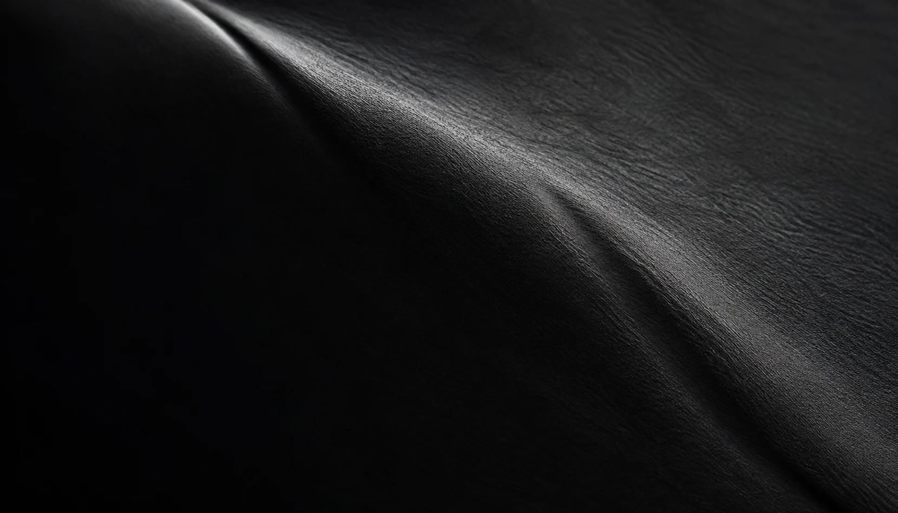
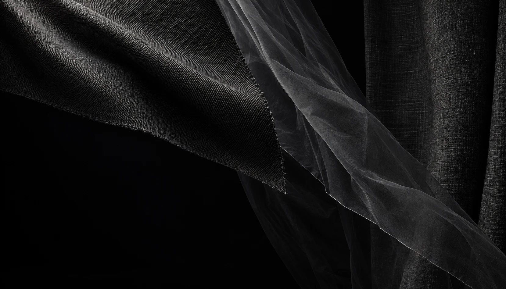
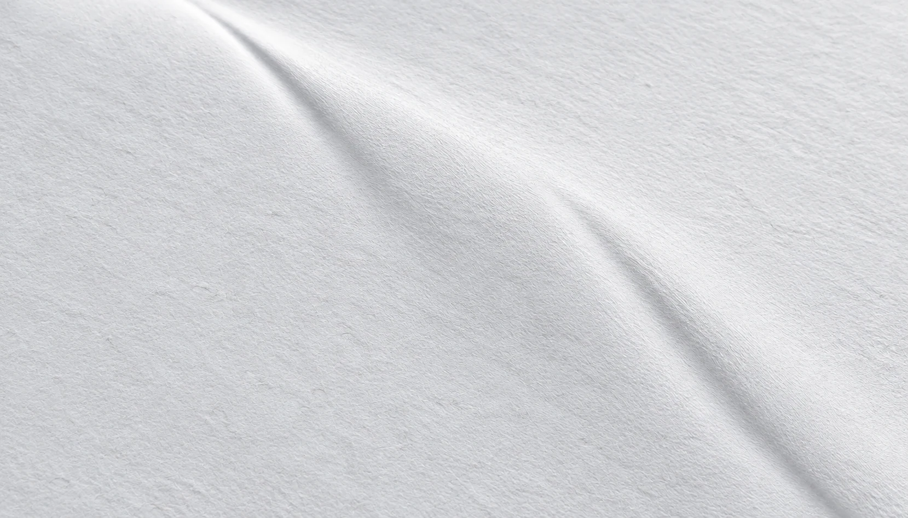
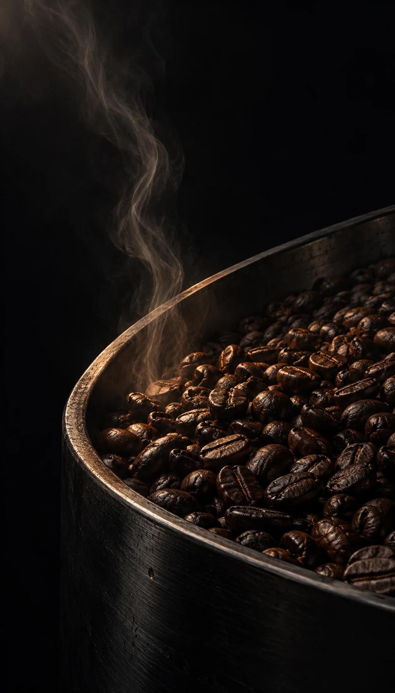
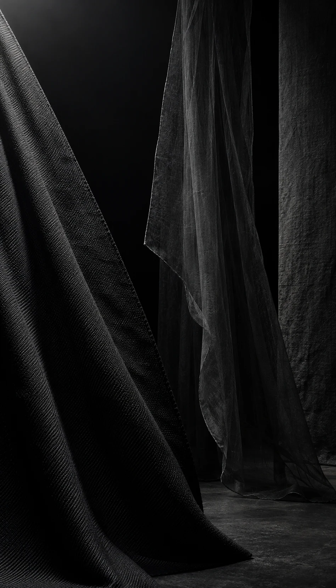
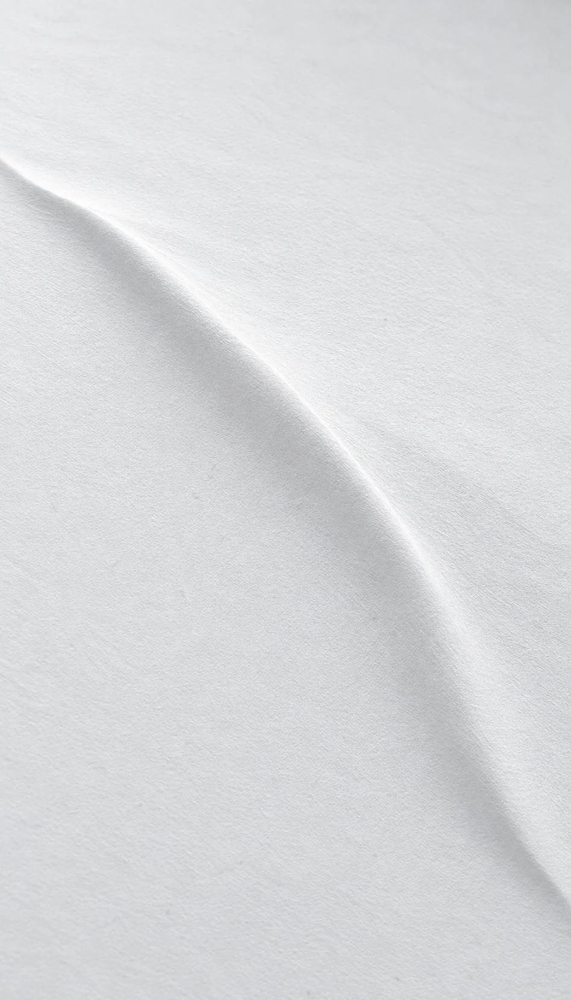

あわい / G1 静止構図
5場面、ひとつの境界。
構図確認用の仮素材です。動きは実装していません。
全景を比べる
各画像から文字付き構図を拡大できます。画像の全体を、切り取らずに表示しています。
PC / 5場面の全景

あわい 助任珈琲豆店
助任珈琲豆店
KASANE AIMA
AIMA
ここに、あなたの店の話が入ります。
話してみるSP / 5場面の全景
 あわい
あわい
助任珈琲豆店
KASANE AIMA
AIMA
ここに、あなたの
店の話が入ります。
SCENE 00
あわい
物質だけが、まだ名を持たない。

SCENE 01
助任珈琲豆店
琥珀は、黒の内側にだけ。

SCENE 02
KASANE
三つの面。異なる重さ。


SCENE 03
AIMA
染まる余地を、残しておく。
SCENE 04
白い紙
同じ面の、向こうがない。
ここに、あなたの店の話が入ります。
話してみる
ここに、あなたの
店の話が入ります。

光・色・文字の規則
光は左上から右下への斜光で統一。文字は日本語明朝と欧文セリフを使い、構図ごとの位置と縮尺を保ちます。場面の説明は確認ページの外側にのみ置いています。
- 黒
#090A0C - charcoal
#28292D - amber
#AD6B35 - indigo
#132B48 - paper
#ECEDEF
暗い場面の文字：#BFC0C4。白い紙面の文字：#2C2D31。「話してみる」は見た目の確認用です。
場面の接続
- S0 → S1：黒い膜の張力から、黒い金属と焙煎豆へ。
- S1 → S2：局所的な琥珀色を離れ、重なり合う黒い布面へ。
- S2 → S3：三つの面から一枚の布へ。藍が染み込む余地を残す。
- S3 → S4：染まった布から白い紙へ。S0の稜線を再び見せる。
素材と記録
素材10枚は内蔵imagegenで生成した構図確認用の仮素材です。本番には未採用です。生成記録・一般利用条件を確認。本番採用は保留です。S4はS0を参照した編集です。
既存KAS素材の k9gLfaJq60Y と Xag89-CFc0s は次段階の候補で、今回の画像内には未使用です。